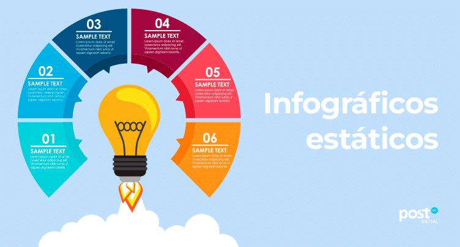

Infográficos
Veja abaixo um infográfico sobre diversidade cultural:

Recursos adicionais para aprofundar o conhecimento sobre pluralismo e diversidade
Veja abaixo um infográfico sobre diversidade cultural:

Participe de quizzes online e desafios sobre culturas diferentes: